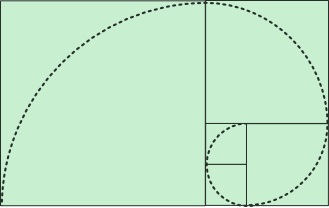

D. A. Schorr
poet | he / him
standing on the porch considering the carpenter bees noticing as if for the first time the yellow smudges of their noses bodies much too bulbous to bob as they do as they hover in twos and threes considering him as if for the first time twisting on his two legs to look behind at me in the doorway of our house these bees are friendly bees he says and I nod they do not sting and I do not mention how they eat the wood of the porch of the house that we live in to carve out a home of their own and I do not mention how they must die like all carpenters so that we may live here in this house we have built out of wood and I would like our son to notice more often these full-bodied miracles or the phoebe twitching her tail and shouting in alarm at our presence on the porch that's the bird that lives up there above the door but it is a ritual that happens only when he is angry enough to slam a fist through a wall and surrenders his phone for a time while we repair together the hole he has made in the wall and for a few days after before the phone is risen and returned before his eyes turn away from the bees we have marked for slaughter and I can kid myself that I do not see the world through a piece of glass in my palm that I can remember the last time I watched a bee bury her face in clover
This poem was published in Assaracus Issue 30 (Sibling Rivalry Press) and was nominated for a Pushcart Prize.